A very 💩 assignment
This week’s inspiration was 💩. No, really! That’s what I wanted my end result to be: a candle that looks like 💩. See, my friends are always giving me 💩, and so I thought this would be a good way to get back at them!
I started by browsing through Thingieverse and other online platforms for the perfect 💩. I finally found one and downloaded it (included in files below). I then started Rhino-ing so I could (1) split into halves and (2) create 2 separate molds.
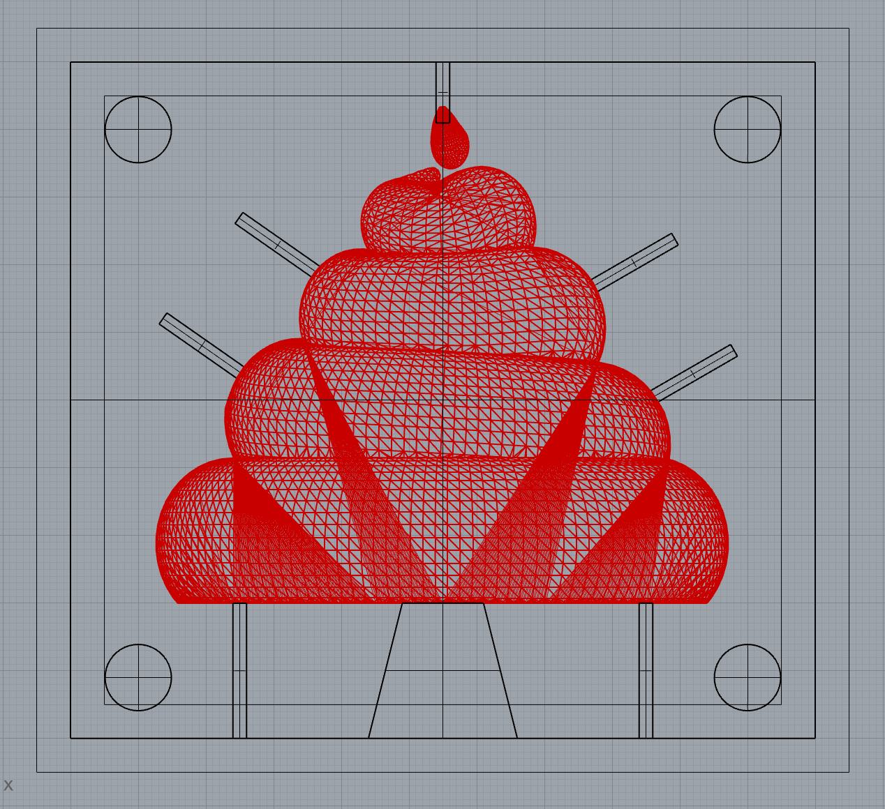
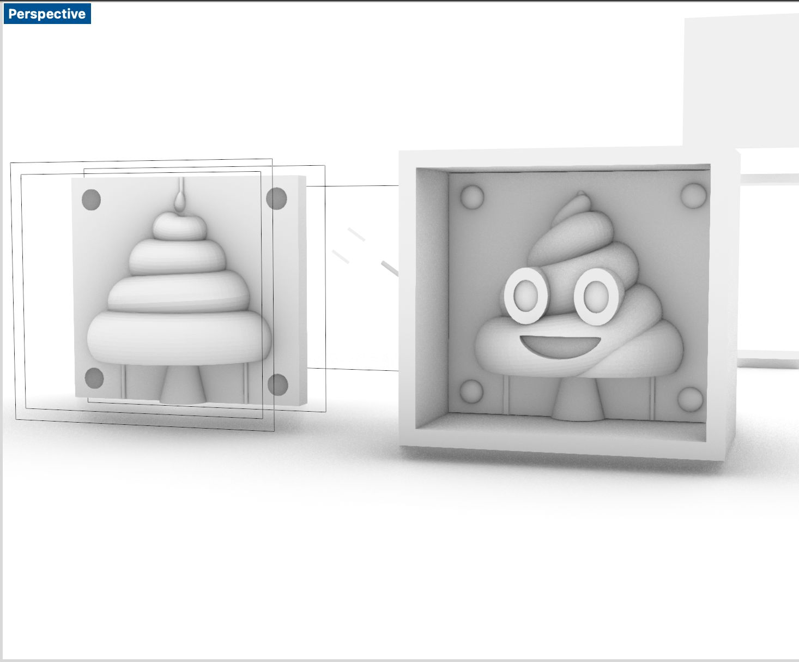
Is it really possible to make 💩 without feeling like 💩? In my experience, the answer to that question is a big fat NO. I did great in modeling my mold but printing it took forever. My prints failed 3 times! And thanks to Noelle, Rodrigo, and Junchao, I was able to figure out why. It turns out, my apartment had gotten significantly colder over the last week or so and that was causing the filament to not melt and attach well, especially at higher heights in the print.
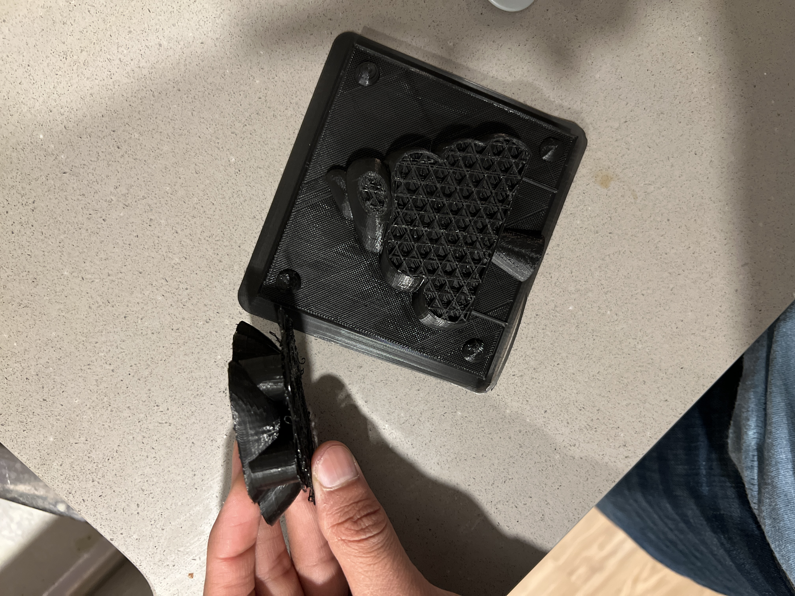
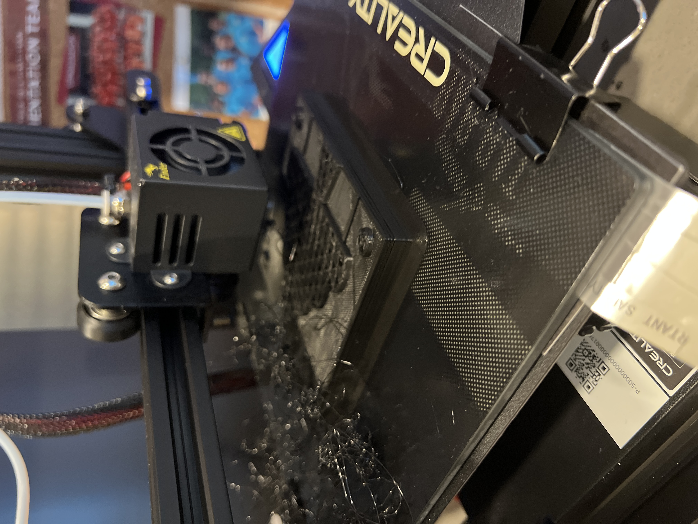
While recalibrating, I realized one of the springs below the bed had lost its flexibility and it caused major problems in relabeling it. I ended up padding that side of the bed with a couple sheets of paper and a business card which did prove to be pretty helpful!
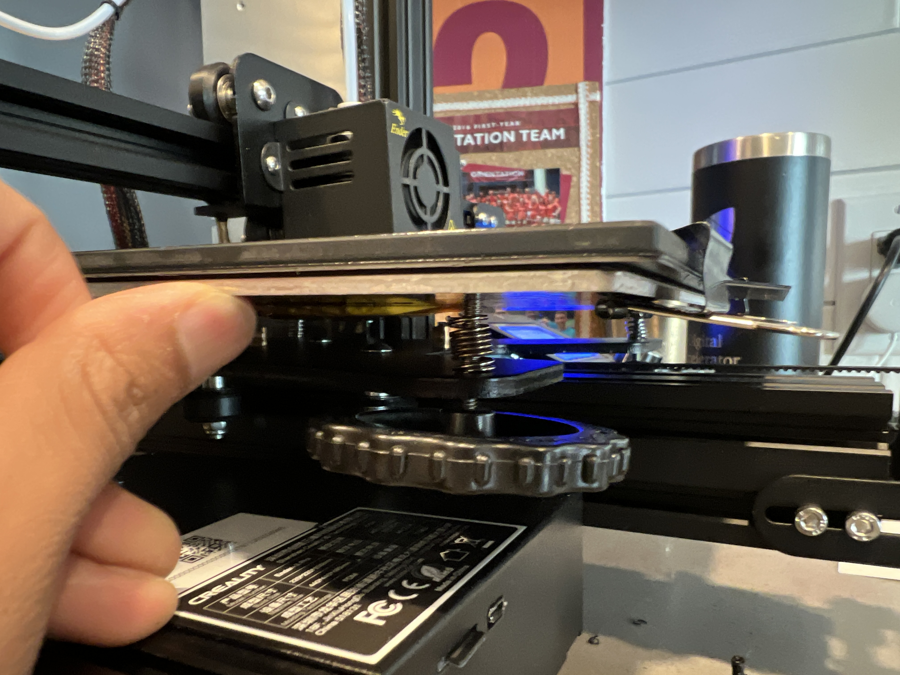
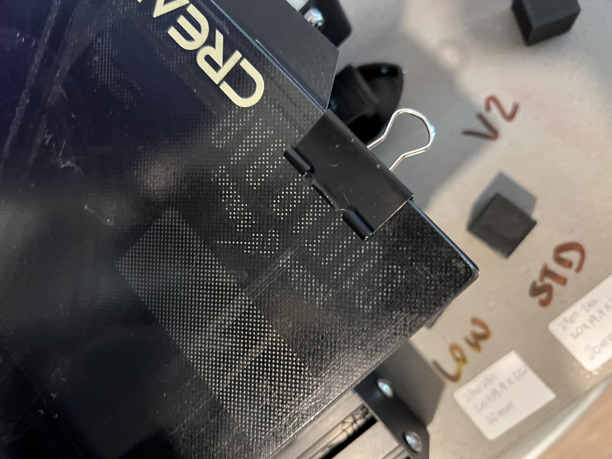
After recalibrating my printer for the third time in a row, I finally got it to printing again. I was able to make my front and back molds along with one out of the two enclosures to pour the OOMOO in. They still had layering issues in areas but I figured I could address those later.
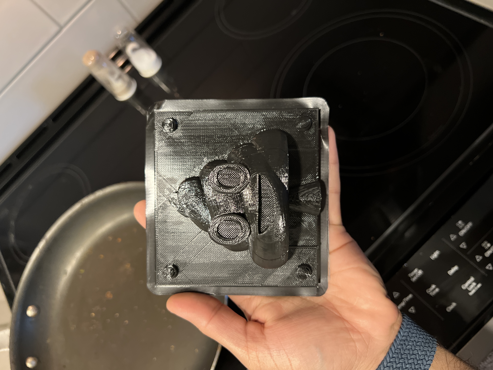
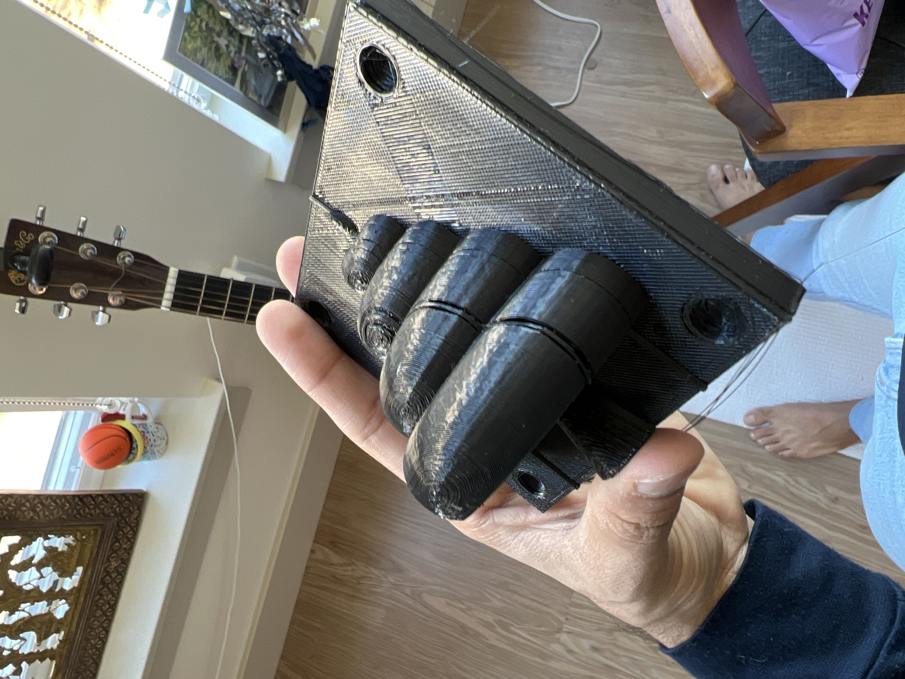
I filled the gaps with clay (thanks to Noelle for the suggestion and the clay) and started making my OOMOO molds. I could only print one enclosure so I had to do them linearly. This caused an issue with partitioning the right amount of OOMOO for each mold and one of my molds didn’t end up having enough. Because I had layering issues in my 3D prints, I broke both of my 3D printed molds and even had them stuck in my silicone. Guess you could say my silicone molds had constipation 😂
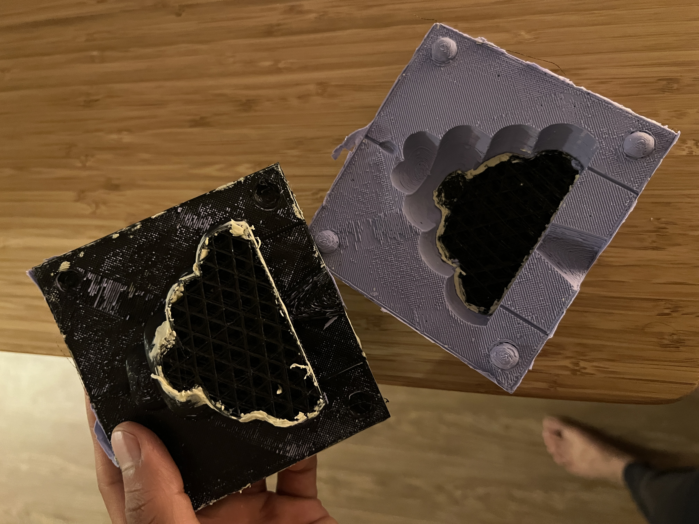

For the final step, I decided to skip plaster casting and go straight into making my 💩 candles. It took a couple of minutes to heat the wax, add color, and scent and pour the solution into the mold! (And yes, I sadly did break one while taking it out because I was too excited to put the final one in)
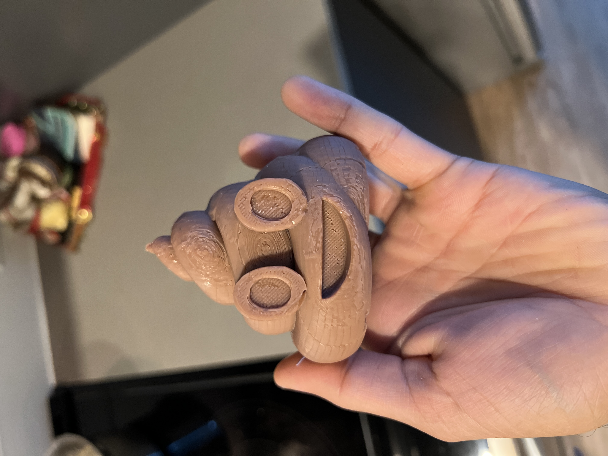
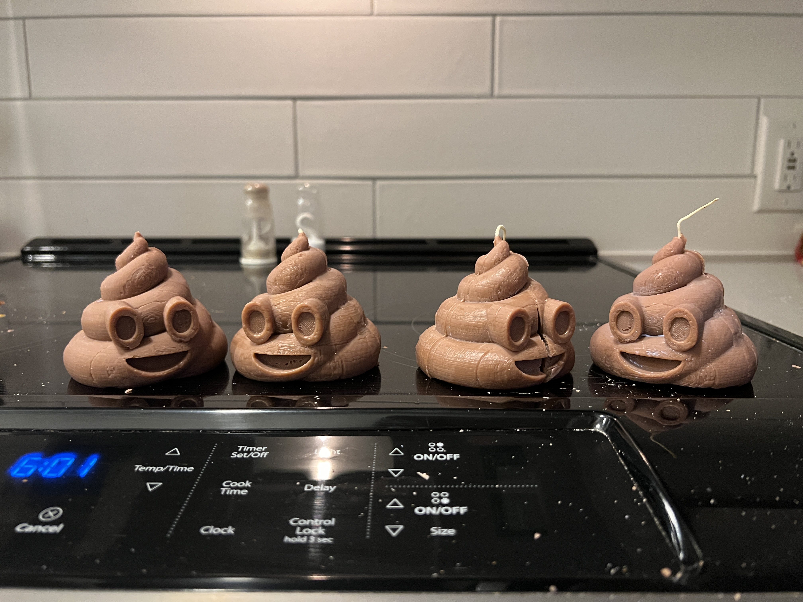
Massive thanks to Noelle (for all her help and advice through the process), Junchao (for helping review my Rhino design in-class and advising on how to fix my 3D printer problems), and Rodrigo (also for his help in fixing my 3D printer, and especially that link he shared!).
Thanks for checking this out and reading through my 💩 adventures. Here are my A6 source files